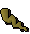
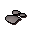
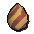
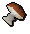
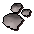
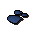
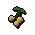
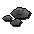
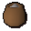
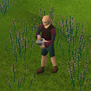

")
Herblore - Secondary Ingredients
Introduction
| Before a herbalist can start mixing ingredients together to make potions, they will also need to collect a number of secondary ingredients. These tend to be easier to obtain than primary herbs, but are a vital part of the potion creation process.
A list of secondary ingredients and where they can be found is shown below: |
Ingredient |
Location found |
![[image]](../../img/main/kbase/items/secondary_ingredients/eyeofnewt.gif) Eye of newt |
Available to purchase in all Herb Shops (such as the one in Taverley) Also available from Magic shops, such as Port Sarim, and monster drops. |
![[image]](../../img/main/kbase/items/secondary_ingredients/groundunicornhorn.gif) Ground unicorn horn |
Kill unicorns or black unicorns and grind up a horn in order to obtain. Such creatures can be found in the Wilderness, on Entrana, south of Seers' Village and south of Edgeville. |
![[image]](../../img/main/kbase/items/secondary_ingredients/snake_weed2.gif) Snake weed |
Snake weed can be found on Karamja by searching the vines south-west of Tai Bwo Wannai Village, but only after completing the Jungle Potion quest. |
|  Limpwurt root |
Hill giants, cockatrices and hobgoblins drop this ingredient, and it may be grown through the Farming skill. |
![[image]](../../img/main/kbase/items/secondary_ingredients/redspidereggs.gif) Red spiders' egg |
These eggs can be found at the end of Varrock Sewers, in Crandor and Karamja Dungeon and from monster drops such as cave crawlers. |
![[image]](../../img/main/kbase/items/secondary_ingredients/garlic.gif) Garlic |
Garlic can be bought from the spice stall in Ardougne market or the food store in Port Sarim. |
|  Silver dust |
Grind a bar of silver in the grinding machine above the Ectofuntus, then collect it in an empty pot. |
![[image]](../../img/main/kbase/items/secondary_ingredients/blamish_snail_slime.gif) Blamish snail slime |
Blamish snail slime can be bought from Gerrant's Fishing shop in Port Sarim during or after the Heroes' Quest. Blamish snails can be found in the swamps of Mort'ton. |
![[image]](../../img/main/kbase/items/food/other/chocolate_dust.gif) Chocolate dust |
You can find chocolate, which will need to be ground up, in both the Cooking Guild and Zanaris. Alternatively you can purchase the bars or dust from the grocers on the second level of the Grand Tree in the Tree Gnome Stronghold or bars from Rokuh in Nardah. |
![[image]](../../img/main/kbase/items/secondary_ingredients/whiteberries.gif) White berries |
These can be found within the Wilderness and in Tirannwyn, or grown using the Farming skill. Cave crawlers also drop these quite frequently. |
![[image]](../../img/main/kbase/items/secondary_ingredients/rubium.gif) Rubium |
Rubium can be mined in the caverns underneath Witchaven, after completing Kennith's Concerns. |
![[image]](../../img/main/kbase/items/secondary_ingredients/toadleg.gif) Toad's legs |
These can be obtained from swamp toads in the Tree Gnome Stronghold or in Taverley; simply click on them to remove their legs. |
![[image]](../../img/main/kbase/items/secondary_ingredients/goats_horn_dust.gif) Ground goat's horn |
Obtained by crushing desert goats' horns. |
![[image]](../../img/main/kbase/items/secondary_ingredients/snapegrass.gif) Snape grass |
Snape grass can be obtained from the hobgoblin peninsula to the west of the Crafting Guild and also from Waterbirth Island. |
|  Cockatrice egg |
Cockatrice eggs are created by using the spirit cobra's Ophidian Incubation scroll on a chicken egg. |
|  Mort Myre fungi |
Can be obtained in Mort Myre Swamp after completion of the Nature Spirit quest and using the blessed silver sickle to cast the 'Bloom' spell. |
![[image]](../../img/main/kbase/skills/hunter/items/kebbitdust.gif) Kebbit teeth dust |
Obtained by crushing kebbit teeth. |
|  Ground gorak claw |
Obtained by crushing a claw from one of the goraks on the gorak plane. |
|  Ground blue dragon scale |
The scales are found in Taverley Dungeon; they must be ground with a pestle and mortar in order to get this ingredient. |
![[image]](../../img/main/kbase/items/secondary_ingredients/beast_nails.gif) Nail beast nails |
Obtained from killing nail beasts during Temple Trekking / Burgh de Rott Ramble. |
![[image]](../../img/main/kbase/items/roots/yewroots.gif) Yew roots |
These can be grown using the Farming skill or bought from other players. |
![[image]](../../img/main/kbase/items/secondary_ingredients/wineofzam.gif) Wine of Zamorak |
Obtained from the Chaos Temple using the telekinetic grab spell. |
![[image]](../../img/main/kbase/items/offspring/cactus_spine.gif) Cactus spine |
This can be grown using the Farming skill or bought from other players. |
![[image]](../../img/main/kbase/items/secondary_ingredients/potato_cactus.gif) Potato cactus |
Obtained within the Kalphite Hive in the desert to the south-west of Shantay Pass. |
![[image]](../../img/main/kbase/items/secondary_ingredients/janger.gif) Jangerberries |
Obtained on the island to the west of Yanille, or grown with the Farming skill. |
![[image]](../../img/main/kbase/items/roots/magicroots.gif) Magic tree roots |
These can be grown using the Farming skill or bought from other players. |
![[image]](../../img/main/kbase/items/secondary_ingredients/crushed_bird_nest.gif) Crushed nest |
Obtained from crushing a birds' nest found in a tree, or bought from other players. |
![[image]](../../img/main/kbase/items/secondary_ingredients/nightshade.gif) Nightshade |
This can be grown using the Farming skill, or obtained after the Watchtower. |
|  Poison ivy berries |
These can be grown using the Farming skill or bought from other players. |
![[image]](../../img/main/kbase/items/secondary_ingredients/wimpy_feather.gif) Wimpy feather |
Taken from wimpy birds caught near Oo'glog using the Hunter skill. |
![[image]](../../img/main/kbase/items/secondary_ingredients/frog_spawn.gif) Frog spawn |
Caught using a fishing net in the Lumbridge Swamp Dungeon and Dorgesh-Kaan South Dungeon. |
![[image]](../../img/main/kbase/items/secondary_ingredients/papaya.gif) Papaya fruit |
Grown in fruit tree patches from papaya seeds. |
![[image]](../../img/main/kbase/items/secondary_ingredients/phoenix_feather.gif) Phoenix feather |
Thieved from the desert phoenix, in the mining site north-west of Uzer. |
|  Ground mud runes |
Created by grinding mud runes with a pestle and mortar. |
![[image]](../../img/main/kbase/items/secondary_ingredients/grenwall_spikes.gif) 5 Grenwall spikes |
Received by box-trapping grenwall in the forests of Isafdar. |
|  Wyvern bonemeal |
Made by grinding the bones of wyverns at the bone grinder in Port Phasmatys, then adding them to a pot. |
Now that you know all the possible ingredients, you are nearly ready to start creating your own potions and poisons. There are just a couple of other things you need to know before you can start.
Grinding Ingredients

To grind them, you will need to obtain a pestle and mortar from a Herblore shop. Once you have one in your inventory, simply select it and then use it with the item you wish to grind.
Vials
Before you can start mixing potions you will need to obtain at least one empty vial. These are commonly dropped by water elementals and can be bought from Herblore shops and the general store in Ardougne. They can also be made as part of the Crafting skill.
To make your own vials please see the Crafting section.
Click here to view the Herblore FAQs

More articles in
Herblore (Members Only)
|
|
|
Further Help
If this article does not help you, you may find the following sections of the RuneScape site helpful:
|
|